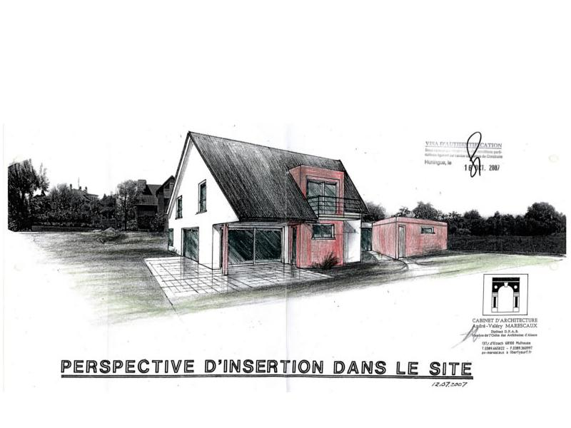
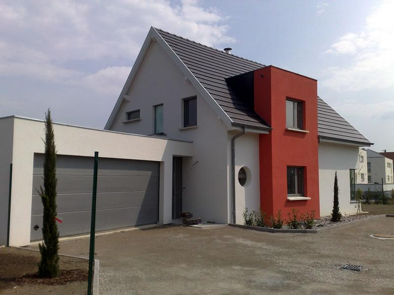
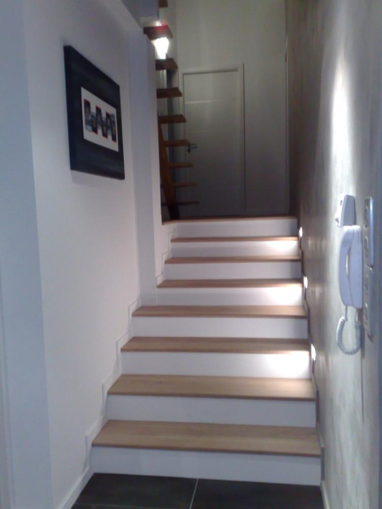
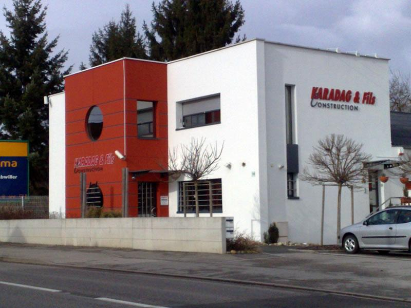
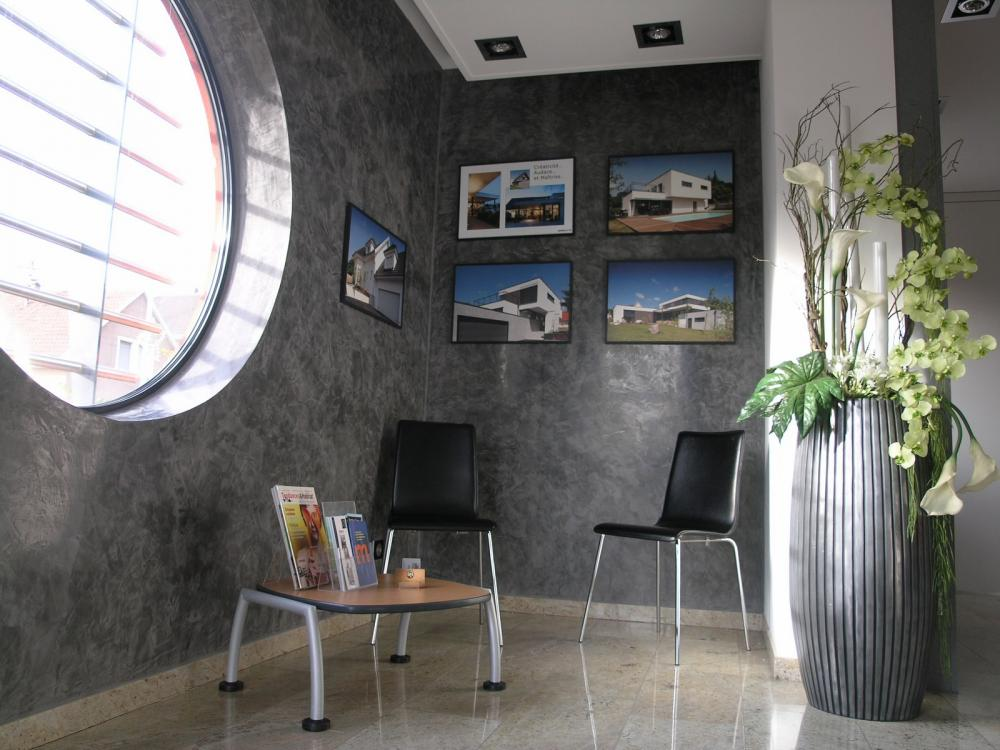

Entreprise familiale · depuis 1986
Votre maison, du terrassement au crépi.
Maçonnerie, béton armé, terrassement, réseaux et façades : Karadag & Fils construit des maisons individuelles et de petits immeubles dans un rayon de 60 km autour de Mulhouse, et coordonne tout le chantier.


Quatre étapes, une seule entreprise
Nous réalisons nous-mêmes chaque étape du gros œuvre, et nous coordonnons et pilotons le chantier avec les autres corps de métier.
Terrassement et réseaux
Fouilles pour fondations, retenue de terre, canalisations, VRD et réseaux enterrés.
Fondations et béton armé
Semelles de fondation, murs de caves, dalles et prédalles, sous-sol en béton armé.
Maçonnerie et gros œuvre
Murs en briques isothermes et biothermes, poteaux, poutres, garages, terrasses et balcons.
Crépissage et façades
Crépi des murs neufs et ravalement de façades pour les maisons existantes.
Coordination et pilotage de chantiersOuvrages réalisés aux normes parasismiques, conformément au CSTB.
Ce que nous construisons
Gros œuvre
Légende- Semelles de fondation
- Murs de caves
- Murs de retenue de terre
- Murs de clôture
- Poteaux et poutres
- Dalles et prédalles
- Dalles flottantes
- Garages
- Terrasses
- Balcons
Murs de parement en briques ou en pierres, pose de briques de verre, dallage en béton lisse.
Terrassement
Légende- Fouilles pour fondation
- Fouilles pour piscines
- Retenue de terre
- Enrochement
- Remblais
- Apport de terre végétale
- Chemins d'accès
- Fosses septiques et puits
- Eaux usées et eaux de pluie
- Gaz, électricité, téléphone
Pose des réseaux enterrés et raccordement aux réseaux externes.

Jusqu'aux finitions de votre maison
Exemples de prestations réalisées dans nos maisons et appartements, pour des finitions soignées.
- Cuisines
- Salles de bains
- Cheminées et poêles
- Escaliers et garde-corps
- Éclairage intérieur
- Portes et placards
- Terrasses en bois exotique
- Aménagements extérieurs
Une entreprise familiale, à l'écoute de votre budget
Depuis 1986, Karadag & Fils construit pour les particuliers (maisons individuelles) et pour les professionnels de l'immobilier (petits immeubles, entrepôts). Nous investissons dans des équipements récents pour livrer des ouvrages aux finitions soignées.
- Depuis
- 1986
- Rayon
- 60 km
- Aussi
- Rénovation · terrains disponibles


Nos bureaux128 rue de l'Île Napoléon, Rixheim
Parlons de votre maison
Nous vous écoutons, nous vous conseillons et nous adaptons le projet à votre budget. Appelez-nous ou demandez à être rappelé gratuitement.
- Adresse
- 128 rue de l'Île Napoléon, BP 104, 68170 Rixheim
- Téléphone
- 03 89 55 36 94
- info@karadagetfils.com
- Rayon
- 60 km autour de Mulhouse